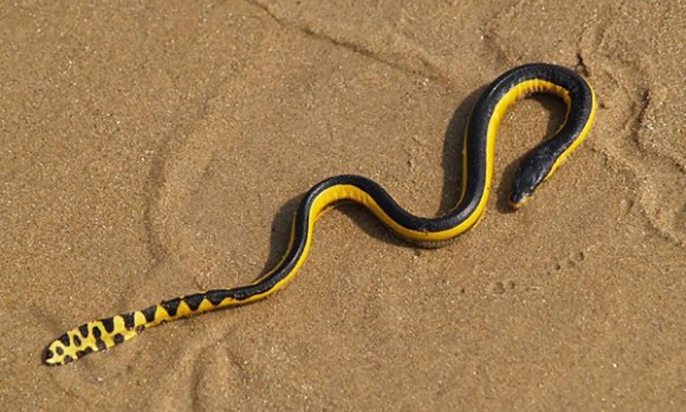
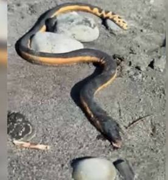

These lovable slippery folks are usually found slithering in shallow water after large storms and ocean currents. Usually waters here are too cold for them to survive, so they don't stick around for long. Since they are protected under the wildlife law, it is illegal to kill or harass snakes. They have extreme amounts of poison and will kill you if you get bitten.
Whenever sea snakes are spotted, it is best to notify a DOC (Department of Conservation) ranger. They will come and bring them to a secure and safe location. Their patterns usually consist of yellow and black stripes and around northern beaches. They don't spend as much time in water as you think as over 50% of their time is spent on land whether it be laying eggs or simply resting.
These flippen paddlers are efficient swimmers using flattened tails to hunt their prey, such as eels and fish. They also often dive to depths of 100 metres, as they are efficient divers. They use their skin to absorb oxygen, which allows them to stay underwater for up to 3 hours. Whenever a sea snake gives birth, they require no land, doing the entire process underwater. They often approach swimmers cause they are very curious creatures. They are also very tasty to creatures like sharks and crocodiles and large fish like snapper.
